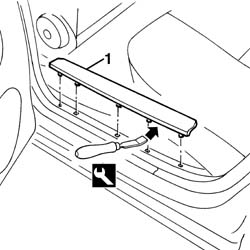
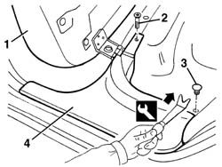

7040L40 rear compartment scuff strip - r r
- Path
- Procedures > 70 FITTINGS > 7040 BODYSHELL INTERIOR TRIMS AND FITTINGS > 7040L cabin floor covering > 7040L40 rear compartment scuff strip - r r
- Kind
- repair procedure (removal / refitting; the operation number is the code)
- Applies to
- all engines; all production periods
- Interactive page
- https://sloeber94.github.io/elrnDB-a156/en/#/3238854
Applies to: all engines; all production periods
 Removing
Removing
 Refitting
Refitting1. Remove the running board from the four retainers using the special tool.
 | Name | Country |
|---|---|---|
1 | Scraper blade | 1.823.014.000 |

Applies to: all engines; all production periods
Refitting
RemovingCheck that the kick plate is undamaged.
Refit the running board, fitting the four retainers.
Applies to: all engines; all production periods; only with equipment: Station Wagon
Removing
Refitting1. Raise the rear seat cushion.
2. Unscrew the bolt.
3. Remove the retaining button, using the special tool.
| Name | Country |
|---|---|---|
3 | Scraper blade | 1.823.015.000 |
4. Remove the running board from the inner retainers, using the special tool.
| Name | Country |
|---|---|---|
4 | Scraper blade | 1.823.014.000 |

Applies to: all engines; all production periods; only with equipment: Station Wagon
Refitting
RemovingCheck that the kick plate is undamaged.
Position the running board and engage the inner retainers.
Fit the retaining button.
Tighten the bolt.
Lower the rear seat cushion again.